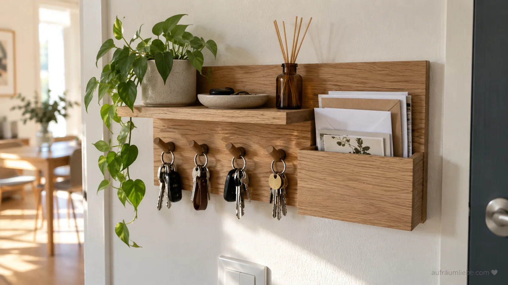

Hi, ich bin Lisa!
Ich liebe es, Räume zu vereinfachen und Routinen zu schaffen, die den Alltag leichter machen. Auf aufräumliebe findest du ehrliche Ideen, die in echte Wohnungen und Familienleben passen.

Sicher & werbefrei, nur hilfreiche Inhalte
Früher lagen abends immer 2 Schlüsselbunde irgendwo zwischen Flur und Küche. Drei Schlüsselboards wurden ausprobiert, bevor klar wurde: Das Möbelstück war nie das Problem. Die fehlende Routine war es. Erst als die Reihenfolge beim Reinkommen laut ausgesprochen wurde, hat sich wirklich etwas verändert.
Einfach umsetzbar, sofort wirksam
Mehr Ordnung in jedem Raum
Für die schönen Dinge im Leben
Ideen, die dich wirklich weiterbringen
Ich liebe es, Räume zu vereinfachen und Routinen zu schaffen, die den Alltag leichter machen. Auf aufräumliebe findest du ehrliche Ideen, die in echte Wohnungen und Familienleben passen.
Mehr Tipps, mehr Inspiration, mehr Aufräumliebe.
Sicher & werbefrei, nur hilfreiche Inhalte